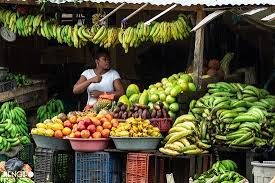
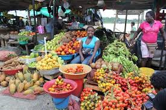

Identidad local
Reconoce el valor cultural de las ventas tradicionales y del trabajo comunitario.
Universidad Tecnológica del Chocó
Cultura, economía local, biodiversidad y tradición comercial del pueblo chocoano.
Este sitio presenta las ventas del mercado como un espacio de encuentro,aprendizaje, comercio popular y memoria cultural. Cada pestaña funciona con la arquitectura “Solo CSS”.

.jpg)

Reconoce el valor cultural de las ventas tradicionales y del trabajo comunitario.
Permite practicar HTML semántico, CSS responsive, tabs y animaciones.
Usa una estética limpia, universitaria, verde selva y dorado cálido.
En el mercado se encuentran productos frescos que conectan el campo, el río y la cocina tradicional chocoana.
Base de muchas preparaciones locales y símbolo de abundancia alimentaria.
Mango, piña, papaya, borojó y otros sabores propios del territorio.
Producto agrícola con valor cultural, gastronómico y económico.
Yuca, ñame y otros alimentos que fortalecen la seguridad alimentaria.
.jpg)
Las vendedoras y vendedores del mercado son guardianes de saberes, rutas de abastecimiento, formas de atención y prácticas solidarias.
Su trabajo sostiene la economía cotidiana y mantiene viva una parte fundamental de la identidad urbana de Quibdó.
.jpg)
.jpg)
.jpg)
.jpg)
Tema: Las ventas del mercado de Quibdó.
Tecnologías: HTML5 y CSS3.
Restricción: sitio desarrollado :).
Propósito: enseñar diseño web con identidad territorial.